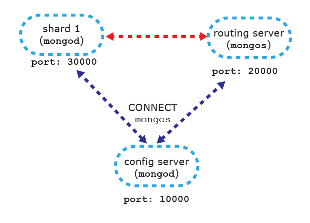

샤딩의 설정은 다음과 같이 크게 두 가지 과정으로 나눌 수 있습니다:
서버 시작하기, 데이터에 샤딩 방식 결정
샤딩은 기본적으로 다음과 같이 세 가지 요소를 포함합니다:
-
샤드
샤드는 컬렉션의 데이터를 부분적으로 담는 그릇입니다. 샤드는 하나의 mongod 서버(개발 및 테스트용)이거나 리플리카 세트(실제 서비스용)입니다.
-
mongos(Query Router)mongos는 라우터 프로세스이며 MongoDB 분산을 동반합니다. 기본적으로 요청을 라우팅하거나 응답을 모읍니다.mongos는 어떠한 데이터도 저장하지 않으며 환경설정에 대한 정보도 저장하지 않습니다. -
Config Server (환경설정 서버)
환경설정 서버는 클러스터의 환경설정을 저장합니다. 즉 어느 데이터가 어느 샤드에 있는지를 저장합니다.
이제 본격적으로 샤딩을 위한 서버와 클러스터를 구성해 보도록 하겠습니다. 우선은 테스트 및 샤드 구성을 위한 단계이므로 1대의 머쉰에서 로컬호스트로 구성하는 방법에 대해 알아보도록 하겠습니다.
테스트가 아닌 프로덕션 레벨에서는 최소 머쉰 2대 상에서 샤드 환경을 구성하는 방법에 대해 알아 보겠습니다.
샤딩을 위한 서버 구성은 크게 1. Config Server, 2. Routing Server, 3. Cluster(Shards)로 분류할 수 있으며, 이에 대한 구성도는 다음 그림과 같습니다:
각 서버에 대한 인스턴스와 DB경로, 포트번호 등은 다음 표와 같이 정리하였습니다:
[표 1.] 각 서버 실행 정보
| instance | dbpath | port | configdb | |
|---|---|---|---|---|
| Config Server | mongod | config | 10000 | - |
| Routing Server | mongos | - | 20000 | localhost:1000 |
| Shard 1 | mongod | shard1 | 30000 | - |
| Shard 2 | mongod | shard2 | 40000 | - |
일단 [표 1.]은 향후 참고용이니 지금 단계에서는 훑어보고 지나가도록 합니다. 단, Routing Server의 인스턴스가 mongos로 실행됨에 주목할 필요가 있습니다. 이 부분은 "서버 시작하기"에서 자세히 다루도록 하겠습니다.
서버 시작하기
각 서버의 인스턴스 실행에 앞서 [표 1.]과 같이 각 서버에 대한 dbpath (데이터를 저장할 폴더)를 만듭니다.
-
Config Server 실행하기
Config Server는 샤딩을 위한 환경설정에 관련된 서버입니다. 샤딩을 할 때 가장 먼저해야 할 일이 Config Server를 실행하는 것이며, 샤딩에 대한 정보를 저장하지만 큰 용량은 아니므로 큰 저장공간이 필요한 것은 아닙니다. 대략 200MB의 실제 데이터 당 1KB 정도의 저장공간을 확보하면 됩니다.
Config Server의 인스턴스 실행은 여느
mongod실행과 다르지 않습다. 단,--configsvr옵션이 필요합니다 (하지만 생략해도 큰 문제는 없습니다). Config Server 인스턴스 실행에 대한 프로토타입은 다음과 같습니다:$ mongod --configsvr --dbpath <path> --port <port>[표 1.]과 같이
dbpath와port를 설정합니다:$ mongod --configsvr --dbpath /[YOUR_DB_PATH]/config --port 10000 -
Routing Server 실행하기
Routing Server는 클라이언트 어플리케이션에 대한 인터페이스 역할을 하는 서버입니다.
mongos인스턴스에 의해 실행되며configdb옵션을 갖습니다. 프로토타입은 다음과 같습니다:$ mongos --configdb <config server hostnames>예를 들어,
port번호 20000에localhost:10000의 Config Server에 연결하는mongos인스턴스 실행은 다음과 같습니다:$ mongos --port 20000 --configdb localhost:10000port는 [표 1.]과 같으며--configdb옵션을 통해port번호 10000인 Config Server와 연결됩니다.[그림 2.] mongos 인스턴스 실행을 통한 routing server와 config server 연결. 만약 다중의 Config Server를 연결하는
mongos인스턴스를 실행하는 예는 다음과 같습니다:$ mongos --configdb <hostname1:port1>, <hostname2:port2>, <hostname3:port3>현재는 Config Server가 1개만 설정되어 있으므로 이 부분은 일단 참고만하고 넘어가겠습니다. 다중의 Config Server 설정에 대한 내용은 다음 글에서 다루도록 하겠습니다.
-
Shard 1 서버 인스턴스 실행하기
mongod 인스턴스를 통해
port번호 30000으로 shard 1 에 대한 서버 인스턴스를 실행합니다:$ mongod --dbpath /[YOUR_DB_PATH]/shard1 --port 30000 -
Shard 2 서버 인스턴스 실행하기
shard 1과 마찬가지로 port 번호와 dbpath만 다르게 서버 인스턴스를 실행합다:
$ mongod --dbpath /[YOUR_DB_PATH]/shard2 --port 40000 -
클러스터에 Shard 1 추가하기
이제 실행 중인
mongos프로세스에 연결하고 클러스터에 샤드를 추가한다. 이에 대한 프로토타입은 다음과 같습니다:$ mongo --host <hostname or machine running mongos> --port <port mongos listens on>본 예제에서는
mongos인스턴스에 대한port번호는 20000이므로 다음과 같이 입력합니다:$ mongo --host localhost --port 20000연결 시, 초기
db는admin인데, 샤드 추가는db를admin으로 사용 중일 때에만 가능하기 때문입니다.mongos에 연결되면 다음과 같이 프롬프트가 표시될 것입니다:Last login: Wed Apr 23 20:55:07 on ttys003 gchoiui-MacBook-Pro:~ gchoi$ mongo localhost:20000/admin MongoDB shell version: 2.6.0 connecting to: localhost:20000/admin샤드 추가는
runCommand명령으로 실행되며 프로토타입은 다음과 같습니다:{ addShard: "<hostname><:port>", maxSize: <size>, name: "<shard_name>" }앞서 실행한 Shard 1에 대한
port번호는 30000이므로 Shard 1을 추가하는 명령은 다음과 같습니다:mongos> db.runCommand({addshard : "localhost:30000", allowLocal : true}) { "shardAdded" : "shard0000", "ok" : 1 }성공적으로 샤드가 추가되면 메시지에
ok가 1로 표시됩니다.allowLocal키는localhost에서 샤드가 실행 시 필요한 옵션입니다. 지금까지의 구성도를 그림으로 표현하면 [그림 3.]과 같습니다. [그림 3.] shard 1 추가. -
클러스터에 Shard 2 추가하기
Shard 1을 추가한 방법과 유사합니다. Shard 2에 대한
port번호는 40000이므로 Shard 2을 추가하는 명령은 다음과 같습니다:mongos> db.runCommand({addshard : "localhost:40000", allowLocal : true}) { "shardAdded" : "shard0001", "ok" : 1 }지금까지의 구성도를 그림으로 표현하면 [그림 4.]와 같습니다.
[그림 4.] shard 2 추가. 이로써 Shard 1과 Shard 2를 포함하는 클러스터가 구성되었다. 이제 데이터를 샤딩하는 방법에 대해 알아보도록 하겠다.
데이터 샤드
우선 샤딩할 데이터를 준비하도록 하겠습니다. db 이름은 jobs이고 컬렉션은 tasks이다. 우선 db를 job으로 이동합니다:
mongos> use jobs
switched to db jobs
현재 db에 다음과 같이 데이터를 입력합니다:
mongos> db.tasks.insert({todo : "shopping", status : "READY", priority : "4"})
mongos> db.tasks.insert({todo : "studying Mongo DB", status : "READY", priority : "1"})
mongos> db.tasks.insert({todo : "reporting the current job", status : "DONE", priority : "8"})
mongos> db.tasks.insert({todo : "cleaning my room", status : "READY", priority : "3"})
mongos> db.tasks.insert({todo : "meeting friends", status : "DONE", priority : "7"})
mongos> db.tasks.insert({todo : "depositing money", status : "RUNNING", priority : "6"})
mongos> db.tasks.insert({todo : "take a walk", status : "RUNNING", priority : "5"})
mongos> db.tasks.insert({todo : "sending an email", status : "READY", priority : "2"})
데이터가 잘 입력되었는지 확인합니다:
mongos> db.tasks.find().pretty()
{
"_id" : ObjectId("5357c35f2a6efd9e3fa1b97a"),
"todo" : "shopping",
"status" : "READY",
"priority" : "4"
}
{
"_id" : ObjectId("5357c35f2a6efd9e3fa1b97b"),
"todo" : "studying Mongo DB",
"status" : "READY",
"priority" : "1"
}
{
"_id" : ObjectId("5357c35f2a6efd9e3fa1b97c"),
"todo" : "reporting the current job",
"status" : "DONE",
"priority" : "8"
}
{
"_id" : ObjectId("5357c35f2a6efd9e3fa1b97d"),
"todo" : "cleaning my room",
"status" : "READY",
"priority" : "3"
}
{
"_id" : ObjectId("5357c35f2a6efd9e3fa1b97e"),
"todo" : "meeting friends",
"status" : "DONE",
"priority" : "7"
}
{
"_id" : ObjectId("5357c35f2a6efd9e3fa1b97f"),
"todo" : "depositing money",
"status" : "RUNNING",
"priority" : "6"
}
{
"_id" : ObjectId("5357c35f2a6efd9e3fa1b980"),
"todo" : "take a walk",
"status" : "RUNNING",
"priority" : "5"
}
{
"_id" : ObjectId("5357c3602a6efd9e3fa1b981"),
"todo" : "sending an email",
"status" : "READY",
"priority" : "2"
}
데이터가 잘 입력된 것을 확인이 완료되면, 다시 db를 admin으로 이동합니다:
mongos> use admin
switched to db admin
admin으로 이동하는 이유는 admin에서만 데이터 샤딩을 설정할 수 있기 때문입니다.
이제 jobs db의 tasks 컬렉션의 데이터를 샤딩할 것입니다. 샤드 키는 _id를 사용합니다. 우선 enablesharding 명령을 통해 db 레벨에서 샤드를 활성화합다:
mongos> db.runCommand({"enablesharding" : "jobs"})
{ "ok" : 1 }
db 레벨에서 샤드 활성화가 완료되면, shardcollection 명령을 통해 컬렉션 레벨에서 컬렉션을 샤딩합니다:
mongos> db.runCommand({"shardcollection" : "jobs.tasks", "key" : {"_id" : 1}})
{ "collectionsharded" : "jobs.tasks", "ok" : 1 }